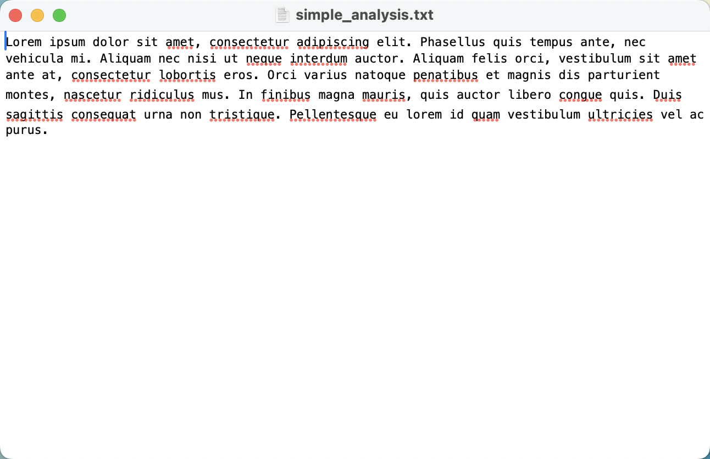
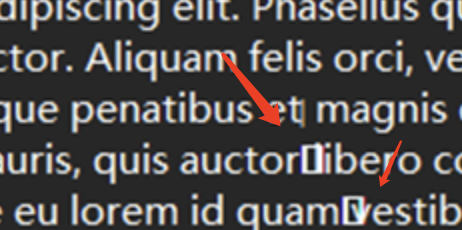

2024御网杯 线下半决赛 Misc WriteUp
前言
本文章编写为2024御网杯高职组线下半决赛WriteUp，线下半决赛抽签号为B12，一点之前一直是第一，赛后听到很多大佬说没工具，大部分自己都是线上的工具，线下没网。但是，线下也有相应的解法，问题不大。
Misc
simple_analysis

这道题看上去好像什么都没有，但是其实在Windows 11的记事本打开会看到特殊字符：

直接0宽度隐写秒了，签到题难度。工具地址：https://330k.github.io/misc_tools/unicode_steganography.html
但是此时问题出现了，我们常用的0宽都是线上在线使用的，怎么办呢？
您看这是什么呢？https://gitcode.com/open-source-toolkit/fe9fb/overview
kitty
附件是一个xlsx文件
但是打开提示报错
我们尝试使用010 Editor看看

发现是压缩包，文件头为我们熟悉的50 4B 03 04 14 00
继续解压，得到了kitty.xml
为了避免上当受骗，我们还是来看下010
果然，小骗子！！
从文件头看出来，这是一个PNG文件
但是文件末尾有一个文件附加，但是文件头不太对。这里肯定不是50 4B 03 04 14 00，虽然flag已经出来了，但是如果是作为这道题的出题人，这题其实应该算是非预期解了。
先改个后缀名吧
感觉这里应该是直接文件附加了
但是50 4B 03 04后面就直接是0000了，所以我觉得这里应该是考察ZIP修复的，但是没想到flag就直接在后面摆着。
aixin
一个pyc文件，比赛过程中我看我前面还有侧边的小兄弟们都在费劲巴拉的去用Pyinstaller啥的去反编译pyc。
但是我想说的是，，预期解虽然是这样，，但是有没有可能，，非预期解更快啊？
| 1 | Mx12ItE2XjqgYEBDADA0WGEhXQI2W2I4JNIiWEJEA05So2nrlQIU |
你猜猜这是什么呢？
非预期秒了，没难度。
ROT13改16，Base64，Reverse，纯套题。
什么？你跟我说你本地没有赛博厨子？？👩🏻🍳要不开心了！这玩意就是个开源的，你本地开个http_server都能给打开。
直播流量
我记得这是哪里的原题来着
OBS流量信息
过滤所有Video data
| 1 | _ws.col.info == “Video Data” |
导出特定数据
| 1 | tcpflow -T %T_%A%C%c.rtmp -r rtmp.pcapng |
这里%T_%A%C%c.rtmp可不是乱起名字，是因为
%T：表示时间戳（timestamp），通常是捕获的时间。%A：表示源地址（source address）。%C：表示目的地址（destination address）的端口号（如果适用）。%c：表示会话编号（session number），用于区分同一时间内的不同会话。.rtmp：是文件扩展名，表示输出文件是RTMP流。
| 1 | ./rtmp2flv.py *.rtmp |
接下来我们就可以得到flv文件
| 1 | ffmpeg -i *.flv -vf “fps=1” frame%04d.png |
使用ffmpeg截取帧，fps代表帧大小
盲水印解出flag即可。


{kind=link}
{kind=link}
{kind=link}
{kind=link}
{kind=link}
{kind=link}
{kind=link}
{kind=link}
{kind=link}
{kind=link}
{kind=link}
{kind=link}
{kind=link}
{kind=link}
{kind=link}